My resume
As a first-year student, my resume focuses on education and skill development rather than professional employment.
This section reflects my academic status, current learning areas, and technical foundation.
| Education |
|
|---|---|
| Experience |
|
| Skills |
|